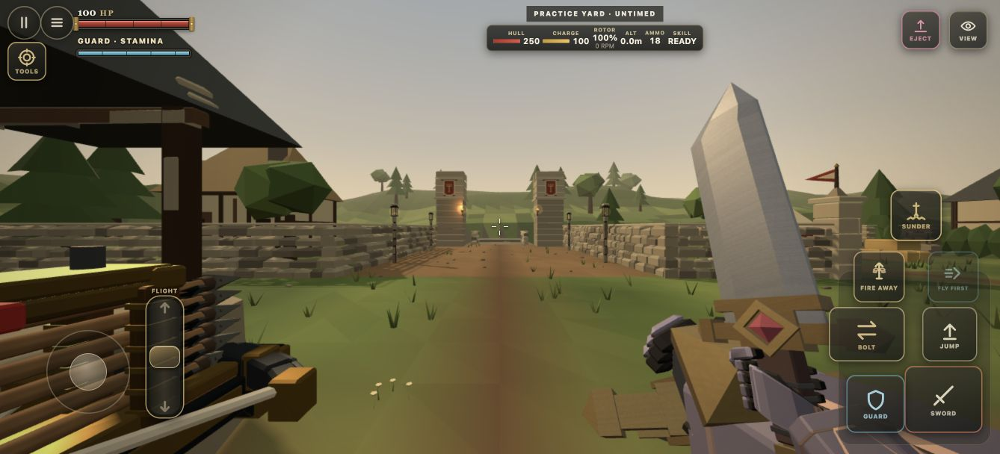
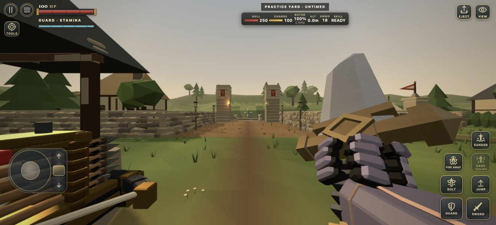
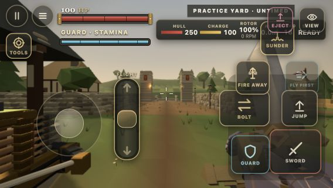
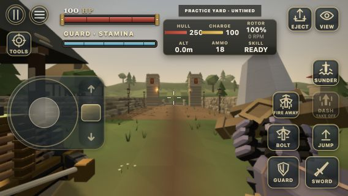
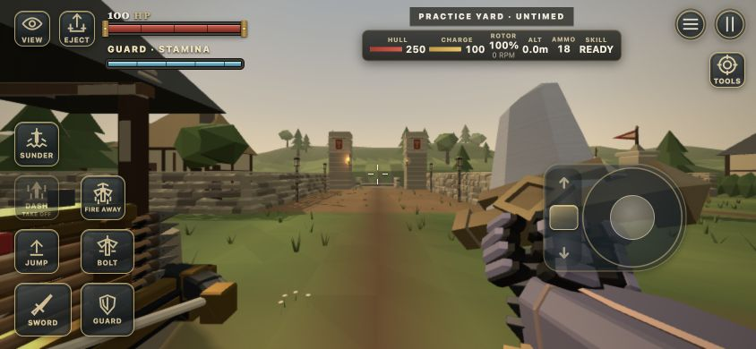
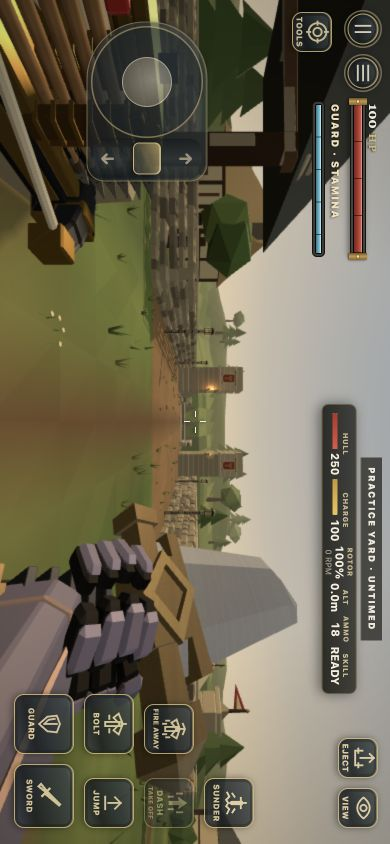

Mobile controls, actual rider cockpit and authoritative Dash repair.




Initial committed attack, actual rotor contact, continued turning and upward steering. Initial positions were staged; damage and movement came from the normal simulation. World capture omits the DOM HUD and audio.

